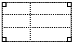

This chapter describes the user interface (UI) elements that you can use in your application. To create a user interface element, you create a resource that defines what that element looks like and where it is displayed. You interact with the element programmatically as a UI object. A Palm OS® UI object is a C structure that is linked with one or more items on the screen. Note that Palm UI objects are just structures, not the more elaborate objects found in some systems. This is useful because in general a C structure is more compact than these other objects.
This chapter introduces each of the user interface objects. It also describes Palm system managers that aid in working with the user interface. The chapter covers:
- Palm OS Resource Summary
- Drawing on the Palm Powered Handheld
- Forms, Windows, and Dialogs
- Controls
- Fields
- Menus
- Tables
- Lists
- Categories
- Bitmaps
- Labels
- Scroll Bars
- Custom UI Objects (Gadgets)
- Dynamic UI
- Color and Grayscale Support
- Insertion Point
- Application Launcher
For guidelines on designing a user interface, see the book Palm OS User Interface Guidelines.
TIP: The Palm OS web site contains recipes for writing code to work with the various user interface objects. See the following URL: http://www.palmos.com/dev/support/docs/recipes
Palm OS Resource Summary
The Palm OS development environment provides a set of resource templates that application developers use to implement the buttons, dialogs, and other UI elements. Table 4.1 maps user interface elements to resources. The ResEdit name is included for developers using that tool. It is not relevant for users of Constructor for Palm OS.
All resources are discussed in detail in the book Palm OS User Interface Guidelines. In addition, specific design recommendations are provided for some of the elements.

|
||
Drawing on the Palm Powered Handheld
The first Palm Powered™ handhelds had an LCD screen of 160x160 pixels. Since then, handhelds with screens resolutions of 320x320 and 320x240 pixels have been introduced. The built-in LCD controller maps a portion of system memory to the LCD. The capabilities of the controller depend on the particular handheld, but be aware that hardware may still limit the actual displayable depths. Given that, Table 4.2 lists the screen bit depths that the Palm OS supports.
Table 4.2 Supported bit depths
|
(See "Color and Grayscale Support" for more information.) |
Usually, the Form Manager handles all necessary drawing and redrawing to the screen when it receives certain events. (In Palm OS, a form is analogous to a window in a desktop application, and a window is an abstract drawing region.) You don't have to explicitly call drawing routines. However, if you're performing animation or if you have any custom user interface objects (known as gadgets), you might need to use the drawing functions provided by the Window Manager.
The Window Manager defines a window object and provides functions for drawing to windows. A window is a drawing region that is either onscreen or offscreen. The window's data structure contains a bitmap that contains the actual data displayed in the window. Windows add clipping regions over the top of bitmaps.
The Draw State
The Window Manager also defines a draw state: pen color, pattern, graphics state, and so on. The draw state is handled differently depending on the operating system version.
On pre-3.5 versions of Palm OS, the system maintains several individual global variables that each track an element of the draw state. If you want to change some aspect of the draw state, you use a WinSet... function (such as WinSetUnderlineMode). Each WinSet... function returns the old value. It's your responsibility to save the old value returned by the function and to restore the variable's value when you are finished by calling the function again. Using such routines can be inconvenient because it means using application stack space to track system state. Further, if a caller forgets to restore the value, the entire look and feel of the handheld may be altered.
Palm OS 3.5 and later has two improvements to make tracking changes to the draw state easier. First, it groups the drawing-related global variables and treats them as a single unit. This draw state is the Palm OS implementation of a pen. It contains the current transfer (or draw) mode, pattern mode and pattern data for WinFill... routines, and foreground and background colors. It also contains text-related drawing information: the font ID, the font pointer, the underline mode, and the text color. (Palm OS does not currently support other common pen-like concepts such as line width, pen shape, or corner join.) Only one draw state exists in the system.
Second, Palm OS 3.5 can track changes to the draw state by storing states on a stack. Your application no longer needs to use its own stack for pieces of the draw state. Instead, use WinPushDrawState to push a copy of the current draw state on the top of the stack. Then use the existing WinSet... functions to make your changes. When you've finished your drawing and want to restore the draw state, call WinPopDrawState.
The new drawing state stack allows for additional debugging help. If an application exits without popping sufficiently or it pops too much, this is detected and flagged on debug ROMs. When switching applications, the system pops to a default state on application exit, guaranteeing a consistent draw state when a new application is launched.
Drawing Functions
The Window Manager can draw rectangles, lines, characters, bitmaps, and (starting in version 3.5) pixels. The Window Manager supports five flavors of most calls, as described in Table 4.3.
Table 4.3 Window Manager drawing operations
The drawing functions always draw to the current draw window. This window may be either an onscreen window or an offscreen window. Use WinSetDrawWindow to set the draw window before calling these functions.
High-Density Displays
The screens on most Palm Powered handhelds are 160 pixels wide and 160 pixels high. Prior to the High-Density Display Feature Set, the operating system provided little support for other screen sizes. The High-Density Display feature set adds support for 320 by 320, or double-density, displays, and the 1.5x Display Feature Set adds additional support for 320 by 2401, or 1.5x, high-density displays. This support is designed so that a Palm Powered handheld with a double-density screen runs, unaltered, nearly all applications designed for a single-density (160 by 160) screen.
Display Density
The density of a display refers to the ratio of the screen's width and height, in number of pixels, to the width and height of a standard 160 by 160 pixel screen. The screen's density has no relation to the screen's physical size; given the form factor of the typical Palm Powered handheld, screens tend to be roughly the same size regardless of the display density.
A double-density screen packs twice as many pixels in each dimension into the same physical space as a single-density screen. Regardless of the screen density, graphic primitives have the same footprint, taking up the same percentage of screen space. The Address Book application, for example, shows 11 lines of text on both single- and double-density screens. The text looks better on the double-density screen, however, because the blitter uses double-density font data when drawing the text, and each character is composed of more pixels.
NOTE: The High-Density Display feature set is designed to allow screen sizes of various densities. The Palm OS Garnet blitter, however, only supports single-, 1.5-, and double-density displays.
When writing applications for Palm OS handhelds, you generally can stop thinking in terms of pixels and start thinking in terms of screen coordinates. The operating system takes care of mapping coordinates to physical pixels, and drawing functions now work in terms of coordinates. So, for example, if you draw a line of text using one of the built-in fonts, that line of text is 12 standard coordinates high. Depending on the display density, that text might be 12 pixels high, 24 pixels high (on a double-density display), or even some other multiple of 12.
Terminology
A clear understanding of the following terms is essential to understanding the concepts introduced by the High-Density Display feature set.
- default density
- A pixel layout with one pixel per standard coordinate.
- high density
- A pixel layout that uses more pixels per standard coordinate than a low-density layout.
- low density
- Equivalent to default density; one pixel per standard coordinate.
- native coordinate system
- A coordinate system based on the density of the draw window; when drawing to the screen, this matches the density of physical screen pixels. For offscreen windows, the native coordinates are based on the density of the offscreen bitmap rather than the physical screen.
- standard coordinate system
- The coordinate system used by most handhelds that don't have the High-Density Display feature set installed. On a single density screen, there is one screen pixel per standard coordinate. On a high-density screen, there is more than one screen pixel per standard coordinate.
Implementation
Applications running on Palm OS default to the standard coordinate system, even if the handheld has a high-density screen. When creating forms, you continue to use the standard coordinate system for form dimensions and for the placement of UI widgets.
In Palm OS, every drawing operation uses a draw state. Added to this draw state by the High-Density Display feature set is a scaling factor, which is used by the Window Manager to transform coordinates passed as arguments to the drawing functions (such as WinDrawLine, WinCopyRectangle, and WinPaintPixel) into native coordinates. This scaling factor is a ratio of the active coordinates to native coordinates.
Drawing is a function of the Window Manager, which initializes the graphic state and then calls the blitter—the low-level code that draws lines and rectangles and places all primitives at the appropriate location on the screen. The Window Manager converts coordinates passed as drawing function arguments from the window's coordinate system to the native coordinate system used by the blitter. Because the blitter needs integer coordinates, most of the WinScale... and WinUnscale... functions have a ceiling parameter that lets you control whether the integer results are obtained by truncation or rounding2. WinScaleRectangle and WinUnscaleRectangle are the exceptions to this rule: the calculated extent is always rounded up if either the extent or the top left coordinate has a fractional part after scaling.
Using WinSetCoordinateSystem, an application can define the coordinate system used by its calls to the drawing functions. On a handheld with a high-density screen, this allows applications to draw using either the standard coordinate system or the native coordinate system. Note that the bounds and clippingBounds fields in the WindowType data structure are always stored using native coordinates. The various functions that access these fields convert the native coordinates to the coordinate system being used by the window.
Which coordinate system a window uses affects the placement and dimensions of graphic primitives. It does not affect bitmap contents, however. You can create bitmaps that contain either low- or high-density bitmap data; the bitmap's density is recorded in the BitmapTypeV3 data structure. The Window Manager uses the window's coordinate system to determine where to place the top left corner of the bitmap on the screen, while the blitter uses the bitmap structure's density field to determine if it needs to stretch or shrink the bitmap data as it blits.
As an example, suppose you have an application that draws a low-density bitmap containing data 30 pixels wide and 70 pixels high on a Palm Powered handheld with a double-density screen. Using the standard coordinate system, the application instructs the Window Manager to place the bitmap at window coordinates (10,20). The Window Manager converts (10,20) to native coordinates and instructs the blitter to draw the bitmap at native coordinates (20,40). Recognizing that the bitmap is low density, the blitter pixel-doubles the source data as it is blitted. The result is that on the double-density screen, the bitmap is displayed with 60 pixels per row and contains 140 rows.
Regardless of the coordinate system used for the placement and dimensions of graphic primitives, no new functions are needed to take advantage of high-density fonts. High-density fonts are used by default when drawing text in a high-density window.
NOTE: Scaling of fonts and bitmaps can be disabled on high-density handhelds running more recent versions of the Palm OS, allowing applications to display more of a large graphic or to display more text at one time. For details, see the documentation for
WinSetScalingMode in the Palm OS Programmer's API Reference.
When working with 1.5x displays, how scaling is performed has implications for how you write your applications. The Window Manager uses fixed-point arithmetic to convert standard coordinates to native coordinates. Standard coordinates are scaled using the "ceiling" function, which causes values to be scaled as follows when working with a 1.5x display:
If an application uses standard coordinates, but also wants a group of lines, pixels, or bitmaps to be evenly spaced, then the coordinates should be separated by an even number of standard pixels. For example, the sequence of standard coordinates separated by 3 pixels {1, 4, 7, 10, ...} is scaled to the uneven sequence {2, 6, 11, 15, ...}, with successive members separated by either 4 or 5 native pixels. In contrast, the sequence of standard coordinates separated by 2 pixels {1, 3, 5, 7, ...} is scaled to the sequence {2, 5, 8, 11, ...}, whose members are consistently separated by 3 native pixels.
NOTE: The scaling algorithm used on Palm OS Cobalt is slightly different; see footnote 2. for details.
Rectangles are scaled using a different algorithm that ensures consistency for both the origin and the extent of each side, so that a rectangle that is scaled and then unscaled is equal to the original rectangle.
When using standard coordinates for frames, the Window Manager uses the "floor" function. This causes values to be scaled as follows when working with a 1.5x display:
The floor function is also used to scale the frame's width.
Push buttons and graphic buttons are user interface controls that are composed of rectangles that share a frame edge. To avoid rounding inconsistencies on 1.5x displays, the buttons' topLeft.x should be placed on an even standard coordinate, and the buttons' width should be odd standard coordinates for horizontally arranged buttons, and the buttons' height should be odd standard coordinates for vertically arranged buttons. This avoids the uneven appearance of every other button frame lying alongside rather than on top of its neighbor's frame. Both rules should be applied for a push button grid, where columns and rows of push buttons share more than one common edge.
When a low-density bitmap is blitted to a 1.5x destination bitmap, the blitter doubles every other pixel in each row, and doubles every other row. Note that applications must always include low-density bitmaps: the blitter doesn't scale 1.5x to double-density, and vice-versa.
WARNING! The blitter's behavior when attempting to draw double-density data (text or bitmap) to a 1.5x destination, or attempting to draw 1.5x data to a double-density destination, is undefined. Drawing low-density font or bitmap data to a high-density destination (either 1.5 or double density), however, works as expected.
If your application must present the highest-quality bitmaps, it should incorporate bitmap families with members for all supported densities. If quality is less important than application size, you may wish to include only a subset of the supported densities (but at a minimum you must include low-density versions).
Avoid algorithms that capture high-density screen data to a low density offscreen window, and then restore the offscreen window to the screen. This results in a loss of data when scaling down, and a further distortion when scaling back up. Instead, allocate the offscreen window using WinCreateOffscreenWindow with the nativeFormat argument. This allocates a bitmap for the offscreen window that matches the density of the screen.
Because fonts are drawn as bitmaps, the rules that apply to bitmaps apply to application-defined fonts as well.
Maintaining Compatibility
The High-Density Display Feature Set is designed to ensure the greatest degree of compatibility with applications that weren't written using the High-Density Display feature set. When running in low-density mode on a handheld with a high-density screen, the window's scale attribute is set to the ratio of the handheld's screen density to the default density. This causes the Window Manager to scale the low-density coordinates used to position graphic primitives into high-density ones used by the blitter. Because low-density mode is the default on all Palm Powered handhelds, applications not designed for high-density screens behave as expected on handhelds with screens of both low and high-density.
Offscreen windows are allocated by default with low-density bitmaps, so direct manipulation of offscreen bitmaps by applications unaware of the High-Density Displays feature set works consistently on handhelds with either low- or high-density screens.
On the other hand, applications that employ the High-Density Display feature set need to include both low-density and high-density bitmaps in order to function consistently on handhelds that don't have high-density displays.
Some Sony CLIE'™ handhelds have a double-density screen but don't have the High-Density Display feature set. The High-Density Display feature set recognizes bitmaps created for these handhelds and properly displays them as double-density bitmaps.
The one area of incompatibility involves applications that directly access the handheld's screen. Applications not designed for a high-density screen that directly access the screen give unexpected results when accessing a high-density screen. For example, if such an application directly manipulates the screen pixels, expecting a 160 by 160 screen, modifying pixel 161 on a double-density screen modifies a pixel in the middle of the first row, not the first pixel on the second row. As well, if the handheld's processor is ARM-based, improper drawing can also result due to differences in endianness between ARM-based platforms and those based upon a 68k-family processor.
Text
Palm-powered handhelds contain system fonts that match the density of the screen. By default, text is always drawn at the best possible density, even for applications unaware of a handheld's high-density capability. The high-density font metrics match those of the low-density system fonts.
Because the system fonts match the screen density, the blitter does not need to perform scaling when blitting text to the screen. If an application running on a handheld with a high-density screen allocates a low-density offscreen window, however, and there are no low-density fonts available, the blitter shrinks the high-density font bitmaps. This results in poor quality text when the offscreen bitmap is subsequently transferred, and pixel-doubled, to a high-density display. If a low-density font is available, the blitter substitutes a low-density font when drawing text to the window in an attempt to produce the best possible aesthetic result.
The blitter uses the following selection algorithm when selecting the font, from high to low priority:
- Select the font with the correct density.
- Select the font whose density is one-half of the correct density.
- Select the font with the closest density, with a tie going to the lower-density font.
This behavior can be overridden to allow your application to display more text at one time; WinSetScalingMode can force the blitter to use the low-density font, unscaled, for subsequent text drawing. Note that this only works on handhelds with high-density displays running a recent version of Palm OS that supports the WinSetScalingMode function.
The Font Manager uses the stdToActiveScale field in the offscreen window's draw state to transform the font metrics. To draw text using high-density coordinates, set the high-density coordinate system by calling WinSetCoordinateSystem before using the Font Manager functions to position text or extract font metrics.
The blitter by default aligns glyphs on standard coordinates. This behavior works fine with single- and double-density displays, but can cause the spacing between characters to look uneven on "one and a half density" (1.5x) displays. This is because on a 1.5x display, the blitter must add "padding"—extra white space—between some glyphs to align them on standard coordinates. You can override this standard behavior with WinSetScalingMode: it allows you to draw text without padding pixels between glyphs, resulting in more consistent kerning for text. Note, however, that while this unpadded mode provides the best looking text, it requires the application to use the high-density coordinate system.
On a high-density screen, underline mode is always drawn using a high-density pattern.
For an in-depth discussion on working with text in the user interface, see Chapter 8, "Text." It contains an in-depth a discussion on selecting, using, and creating fonts; see "Fonts."
Lines and Rectangles
When drawing lines and rectangles with the standard coordinate system on a double-density screen, the primitives are drawn with improved resolution. This behavior prevents an inconsistent appearance when drawing to and from offscreen windows, and prevents unintended overlap and unintended gaps between primitives.
As with other primitives, the Window Manager performs the conversion to the destination coordinate system before calling the blitter. This converts line coordinates as well as a rectangle's topLeft and extent fields.
The diagram on the left in Figure 4.1 results from drawing a diagonal line from (2,1) to (6,3) in the screen's standard coordinate system. The diagram on the right shows the same line drawn in the screen's native coordinate system with the following code:
WinPushDrawState(); oldScale = WinSetCoordinateSystem(kCoordinatesNative); WinDrawLine(2, 1, 6, 3); // x1, y1, x2, y2 WinPopDrawState();
NOTE: In these illustrations, the top-left grid coordinate is the screen origin (0,0) on a double-density screen.
Figure 4.1 A diagonal line drawn using the standard coordinate system (left) and the native coordinate system (right)
The result of drawing a rectangle with a topLeft of (1,1) and an extent of (4,4) when using the standard and native coordinate systems on a double-density screen is shown in Figure 4.2.
Figure 4.2 A rectangle drawn using the standard coordinate system (left) and the native coordinate system (right)
A rounded rectangle would be pixel-doubled in a similar fashion when drawn using the standard coordinate system on a double-density screen. In double-density mode, the rounded corners are drawn in the native double-density coordinates, resulting in more detailed corners.
Patterns
In prior versions of the Palm OS, patterns are 8 by 8 bits, and are 1 bit deep. To support high-density patterns, a new Window Manager function, WinPaintTiledBitmap, gives applications the ability to fill a rectangle with an arbitrary pattern defined in a bitmap argument.
Patterns are expanded to the destination bit depth by the blitter when drawing patterned lines and filled rectangles. The blitter uses the density fields in the pattern's source bitmap and the destination bitmap so that the pattern is drawn using the appropriate density. This makes it possible for an application to define both low-density and high-density patterns.
To supplement the standard PatternType grayPattern, the High-Density Display feature set defines two additional gray patterns: lightGrayPattern and darkGrayPattern. These patterns are shown in Figure 4.3 and Figure 4.4, respectively.


These three standard gray patterns are always drawn by the blitter using the screen density, improving the appearance of gray fills. Custom 8 by 8 patterns, however, are stretched as appropriate by the blitter based on the ratio of the destination density and kDensityLow.
Forms, Windows, and Dialogs
A form is the GUI area for each view of your application. For example the Address Book offers an Address List view, Address Edit view, and so on. Each application has to have one form, and most applications have more than one. To actually create the view, you have to add other UI elements to the form; either by dragging them onto the form from the catalog or by providing their ID as the value of some of the form's fields.
Figure 4.5 shows an example of a form. Typical forms are as large as the screen, as shown here. Other forms are modal dialogs, which are shorter than the screen but just as wide.
A window defines a drawing region. This region may be on the display or in a memory buffer (an off-screen window). Off-screen windows are useful for saving and restoring regions of the display that are obscured by other UI objects. All forms are windows, but not all windows are forms.
The window object is the portion of the form object that determines how the form's window looks and behaves. A window object contains viewing coordinates of the window and clipping bounds.
When a form is opened, a frmOpenEvent is triggered and the form's ID is stored. A winExitEvent is triggered whenever a form is closed, and a winEnterEvent is triggered whenever a form is drawn.
The following sections describe special types of forms:
Alert Dialogs
If you want to display an alert dialog (see Figure 4.6) or prompt the user for a response to a question, use the alert manager. The alert manager defines the following functions:
Given a resource ID that defines an alert, the alert manager creates and displays a modal dialog box. When the user taps one of the buttons in the dialog, the alert manager disposes of the dialog box and returns to the caller the item number of the button the user tapped.
There are four types of system-defined alerts:
The alert type determines which icon is drawn in the alert window and which sound plays when the alert is displayed.
When the alert manager is invoked, it's passed an alert resource that contains the following information:
- The rectangle that specifies the size and position of the alert window
- The alert type (question, warning, notification, or error)
- The null-terminated text string; that is, the message the alert displays
- The text labels for one or more buttons
Progress Dialogs
If your application performs a lengthy process, such as data transfer during a communications session, consider displaying a progress dialog to inform the user of the status of the process. The Progress Manager provides the mechanism to display progress dialogs.
You display a progress dialog by calling PrgStartDialog. Then, as your process progresses, you call PrgUpdateDialog to update the dialog with new information for the user. In your event loop you call PrgHandleEvent to handle the progress dialog update events queued by PrgUpdateDialog. The PrgHandleEvent function makes a callback to a textCallback function that you supply to get the latest progress information.
Note that whatever operation you are doing that is the lengthy process, you do the work inside your normal event loop, not in the callback function. That is, you call EvtGetEvent and do work when you get a nilEvent. Each time you get a nilEvent, do a chunk of work, but be sure to continue to call EvtGetEvent frequently (like every half second), so that pen taps and other events get noticed quickly enough.
The dialog can display a few lines of text that are automatically centered and formatted. You can also specify an icon that identifies the operation in progress. The dialog has one optional button that can be a cancel or an OK button. The type of the button is automatically controlled by the Progress Manager and depends on the current progress state (no error, error, or user canceled operation).
Progress textCallback Function
When you want to update the progress dialog with new information, you call the function PrgUpdateDialog. To get the current progress information to display in the progress dialog, PrgHandleEvent makes a callback to a function, textCallback, that you supplied in your call to PrgStartDialog.
The system passes the textCallback function one parameter, a pointer to a PrgCallbackData structure. To learn what type of information is passed in this structure, see the chapter "Progress Manager" in the Palm OS Programmer's API Reference.
Your textCallback function should return a Boolean. Return true if the progress dialog should be updated using the values you specified in the PrgCallbackData structure. If you specify false, the dialog is still updated, but with default status messages. (Returning false is not recommended.)
In the textCallback function, you should set the value of the textP buffer to the string you want to display in the progress dialog when it is updated. You can use the value in the stage field to look up a message in a string resource. You also might want to append the text in the message field to your base string. Typically, the message field would contain more dynamic information that depends on a user selection, such as a phone number, device name, or network identifier, etc.
For example, the PrgUpdateDialog function might have been called with a stage of 1 and a messageP parameter value of a phone number string, "555-1212". Based on the stage, you might find the string "Dialing" in a string resource, and append the phone number, to form the final text "Dialing 555-1212" that you place in the text buffer textP.
Keeping the static strings corresponding to various stages in a resource makes it easier to localize your application. More dynamic information can be passed in via the messageP parameter to PrgUpdateDialog.
NOTE: The
textCallback function is called only if the parameters passed to PrgUpdateDialog have changed from the last time it was called. If PrgUpdateDialog is called twice with exactly the same parameters, the textCallback function is called only once.
The Keyboard Dialog
The keyboard dialog is an onscreen keyboard on which the user taps to input information into a text field. When the insertion point is in a text field, the user can open the onscreen keyboard by tapping on the silk-screen letters ("abc" or "123") in the lower corners of the input area. The keyboard dialog appears:
Figure 4.7 The Keyboard Dialog
The keyboard dialog's text field contains the full text of the original field, with the insertion point in the same position as in the original field. Users can start inserting and deleting characters immediately, or they can scroll up or down and then insert and delete. When one of the software keys is tapped, the corresponding character is inserted in the text field of the keyboard dialog.
As the user taps, the keyboard dialog code captures pen events, maps them to characters, and posts keyDownEvents. The text field in the keyboard dialog handles each keyDownEvent, displaying the character onscreen and inserting it into the memory chunk associated with the field. Since the keyboard dialog has its own event loop, you cannot handle the key events yourself. If you need to capture the key events, you should consider creating a custom version of the onscreen keyboard dialog, as outlined in "Creating a Custom Keyboard Layout."
The keyboard code edits the text string of the original field in-place. Each field has a text handle that points to the memory chunk containing the text string for the field. When the keyboard dialog is opened, the association between the text handle and the original field is removed. The text handle is then assigned to the text field of the keyboard dialog and edited according to user input. When the keyboard dialog is closed, the text handle is reassigned to the original field.
For details on how FldHandleEvent manipulates the memory chunk that holds a field's text string, see Chapter 9, "Fields," in the Palm OS Programmer's API Reference. Read about the FldGetTextHandle and FldSetText functions.
Opening the Keyboard Dialog Programmatically
In most applications, the keyboard dialog appears only when explicitly opened by the user. There are occasions, however, when you may wish to force the user to input characters via the onscreen keyboard. For example, the service activation application shipped with all Palm VIIs displays the keyboard dialog automatically. Palm made this choice because the activation application must be usable by completely new Palm users, who may not know how to write Graffiti® or Graffiti® 2 or open the keyboard dialog themselves. Other reasons for imposing the keyboard dialog include accurate input of passwords or account numbers.
To display the keyboard dialog programmatically, use one of the following functions:
Normally, use SysKeyboardDialog only. SysKeyboardDialogV10 is for compatibility with Palm OS 1.0.
See Keyboard.h for the function prototypes and the KeyboardType they use. Note that the rest of the functions listed in Keyboard.h are for system use only and do not form part of the Palm OS API.
Keyboard Layouts
The keyboard dialog has three views, one for each of the pre-defined layouts: the English alphabet, numerals and punctuation, and Latin characters with diacritic marks. The default is the English alphabet. To display a particular layout, call the SysKeyboardDialog function and pass it one of the following constants, which are defined in an enumeration named KeyboardType:
Table 4.4 Constants defined in KeyboardType
The International character set, made up of Latin characters with diacritic marks. |
|
The value of |
Creating a Custom Keyboard Layout
You cannot add an extra keyboard layout or modify an existing one. You can, however, create your own keyboard dialog module that implements the functionality outlined below.
First, your application should intercept the keyDownEvent generated when the user taps the "abc" or "123" letters in the input area. Create a custom keyboard dialog loader routine to handle it. Your keyboard code should then do the following:
- Get the text handle of the original field and save it in a variable. Use
FldGetTextHandle. - Remove the association between the text handle and the original field. Use
FldSetTextHandleorFldSetText, passingNULLas the second argument. - Assign the text handle to the text field of the keyboard dialog.
- Define a Keyboard event handler that:
- captures pen events in your onscreen keyboard region, which may be a bitmap of a keyboard or may consist of individual push buttons,
- maps pen events to characters,
- creates
keyDownEventsand posts them to the event queue so that the dialog's text field can automatically handle them and insert them in its text chunk.
- When the dialog is closed, remove the association between the text handle and keyboard's field, and then re-assign the text handle to the original text field.
Finally, if you wish more than one layout, your custom keyboard dialog must contain a button to open each layout.
Offscreen Windows
Offscreen windows are generally used for one of two reasons: to do offscreen drawing (for double-buffering, smooth animations, or to reduce flicker) or so that the application can capture or import graphics.
WinCreateOffscreenWindow allocates a bitmap for the offscreen window. Unless you specify a format of nativeFormat, the offscreen window's bitmap is always low density. This allows applications that expect low-density bitmaps, and that directly manipulate bitmap data, to still function as expected. If you call WinCreateOffscreenWindow and specify a format of nativeFormat, do not access the data in the offscreen window's bitmap directly: the format of bitmaps created by Palm OS can change from release to release, from device to device, and may even differ on a single device depending on the screen depth or compatibility mode.
Functions that return window dimensions—such as WinScreenMode, WinGetBounds, and WinGetDrawWindowBounds—use the window's scaling factor to return coordinates in terms of the active coordinate system. This ensures that the window has the expected dimensions and that graphic primitives have coordinates expected by the application.
WinCreateBitmapWindow gives you the ability to allocate a high-density bitmap for an offscreen window. Use BmpCreate and BmpSetDensity to allocate a high-density bitmap, then associate it with a window by calling WinCreateBitmapWindow.
Controls
Control objects allow for user interaction when you add them to the forms in your application. Events in control objects are handled by CtlHandleEvent. There are several types of control objects, which are all described in this section.
NOTE: Palm OS 3.5 and later support graphical controls for all control types other than check box. Graphical controls behave the same as their non-graphical counterparts, but they display a bitmap instead of a text label. On releases prior to Palm OS 3.5, you can create a graphical control by setting the text label to the empty string and placing the control on top of a bitmap.
Buttons
Buttons (see Figure 4.8) display a text or graphic label in a box. The default style for a button is a text string centered within a rounded rectangle. Buttons have rounded corners unless a rectangular frame is specified. A button without a frame inverts a rectangular region when pressed.
When the user taps a button with the pen, the button highlights until the user releases the pen or drags it outside the bounds of the button.
Table 4.5 shows the system events generated when the user interacts with the button and CtlHandleEvent's response to the events.

Table 4.5 Event flow for buttons
|
||
|
||
|
Adds the |
|
|
Adds the |
Pop-Up Trigger
A pop-up trigger (see Figure 4.9) displays a text label and a graphic element (always on the left) that signifies the control initiates a pop-up list. If the text label changes, the width of the control expands or contracts to the width of the new label plus the graphic element.
Table 4.6 shows the system events generated when the user interacts with the pop-up trigger and CtlHandleEvent's response to the events. Because pop-up triggers are used to display list objects, also see the section "Lists" in this chapter.

Table 4.6 Event flow for pop-up triggers
|
||
|
||
|
||
|
Adds a |
|
|
Adds the |
TIP: To create a pop-up list in Constructor for Palm OS, add a pop-up trigger to your form, then add a list at the same coordinates, uncheck the usable check box in the list resource settings, and then set the List ID in the pop-up trigger to match the ID of the list resource.
Selector Trigger
A selector trigger (see Figure 4.10) displays a text label surrounded by a gray rectangular frame. If the text label changes, the width of the control expands or contracts to the width of the new label.
Table 4.7 shows the system events generated when the user interacts with the selector trigger and CtlHandleEvent's response to the events.
Table 4.7 Event flow for selector triggers
|
||
|
||
|
||
|
Adds a |
Repeating Button
A repeat control looks like a button. In contrast to buttons, however, users can repeatedly select repeat controls if they don't lift the pen when the control has been selected. The object is selected repeatedly until the pen is lifted.
Table 4.8 shows the system events generated when the user interacts with the repeating button and CtlHandleEvent's response to the events.
Table 4.8 Event flow for repeating buttons
|
||
|
||
Tracks the pen for a period of time, then sends another |
||
|
Adds the |
Push Buttons
Push buttons (see Figure 4.11) look like buttons, but the frame always has square corners. Touching a push button with the pen inverts the bounds. If the pen is released within the bounds, the button remains inverted.
Table 4.9 shows the system events generated when the user interacts with the push button and CtlHandleEvent's response to the events.

Table 4.9 Event flow for push buttons
|
||
|
If push button is grouped and highlighted, no change. If push button is ungrouped and highlighted, it becomes unhighlighted. |
|
|
Adds the |
Check Boxes
Check boxes (see Figure 4.12) display a setting, either on (checked) or off (unchecked). Touching a check box with the pen toggles the setting. The check box appears as a square, which contains a check mark if the check box's setting is on. A check box can have a text label attached to it; selecting the label also toggles the check box.
Table 4.10 shows the system events generated when the user interacts with the check box and CtlHandleEvent's response to the events.

Table 4.10 Event flow for check boxes
|
||
|
||
|
Adds the |
|
|
Adds the |
Sliders and Feedback Sliders
Starting in Palm OS 3.5, slider controls (see Figure 4.13) are supported. Sliders represent a value that falls within a particular range. For example, a slider might represent a value that can be between 0 and 10.
There are four attributes that are unique to slider controls:
- The minimum value the slider can represent
- The maximum value the slider can represent
- The current value
- The page jump value, or the amount by which the value is increased or decreased when the user clicks to the left or right of the slider thumb
Palm OS supports two types of sliders: regular slider and feedback slider. Sliders and feedback sliders look alike but behave differently. Specifically, a regular slider control does not send events while the user is dragging its thumb. A feedback slider control sends an event each time the thumb moves one pixel, whether the pen has been lifted or not.
Table 4.11 shows the system events generated when the user interfaces with a slider and how CtlHandleEvent responds to the events.
Table 4.11 Event flow for sliders
|
||
|
Adds or subtracts the slider's page jump value from its current value, and adds a |
|
|
||
|
Adds the Adds the |
Table 4.12 shows the system events generated when the user interacts with a feedback slider and CtlHandleEvent's response to the events.
Table 4.12 Event flow for feedback sliders
|
||
|
Adds or subtracts the slider's page jump value from its current value and then sends a |
|
Adds or subtracts the slider's page jump value from its current value repeatedly until the thumb reaches the pen position or the slider's minimum or maximum. Then sends a |
||
|
||
|
Tracks the pen. Each time pen moves to the left or right, sends another |
|
|
Adds the |
Sliders are drawn using two bitmaps: one for the slider background, and the other for the thumb. You may use the default bitmaps to draw sliders, or you may specify your own bitmaps when you create the slider.
The background bitmap you provide can be smaller than the slider's bounding rectangle. This allows you to provide one bitmap for sliders of several different sizes. If the background bitmap isn't as tall as the slider's bounding rectangle, it's vertically centered in the rectangle. If the bitmap isn't as wide as the slider's bounding rectangle, the bitmap is drawn twice. First, it's drawn left-justified in the left half of the bounding rectangle and clipped to exactly half of the rectangle's width. Then, it's drawn right-justified in the right half of the bounding rectangle and clipped to exactly half of the rectangle's width. (See Figure 4.14.) Note that this means that the bitmap you provide must be at least half the width of the bounding rectangle.
Figure 4.14 Drawing a slider background
Fields
A field object displays one or more lines of text. Figure 4.15 is an underlined, left-justified field containing data.

The field object supports these features:
- Proportional fonts (only one font per field)
- Drag-selection
- Scrolling for multiline fields
- Cut, copy, and paste
- Left and right text justification
- Tab stops
- Editable/noneditable attribute
- Expandable field height (the height of the field expands as more text is entered)
- Underlined text (each line of the field is underlined)
- Maximum character limit (the field stops accepting characters when the maximum is reached)
- Special keys (Graffiti and Graffiti 2 strokes) to support cut, copy, and paste
- Insertion point positioning with pen (the insertion point is positioned by touching the pen between characters)
- Scroll bars
The field object does not support overstrike input mode; horizontal scrolling; numeric formatting; or special keys for page up, page down, left word, right word, home, end, left margin, right margin, and backspace. On Palm OS versions earlier than 3.5, the field object also does not support word selection. Starting in version 3.5, double-tapping a word selects that word, and triple-tapping selects the entire line.
NOTE: Field objects can handle line feeds—\0A—but not carriage returns—\0D. PalmRez translates any carriage returns it finds in any Palm OS resources into line feeds, but doesn't touch static data.
Events in field objects are handled by FldHandleEvent. Table 4.13 provides an overview of how FldHandleEvent deals with the different events
Table 4.13 Event flow for fields
|
||
|
Sets the insertion point position to the position of the pen and tracks the pen until it is released. Drag-selection and drag-scrolling are supported. |
|
Starting in Palm OS 3.5, double-tapping in a field selects the word at that location, and triple-tapping selects the line. |
||
|
Nothing happens; a field remains selected until another field is selected or the form that contains the field is closed. |
|
|
||
Moves insertion point down a line; the insertion point doesn't move beyond the last line that contains text. |
||
Moves insertion point one character position to the left. When the left margin is reached, move to the end of the previous line. |
||
Moves insertion point one character position to the right. When the right margin is reached, move to the start of the next line. |
||
Menus
A menu bar is displayed whenever the user taps a menu icon. Starting in Palm OS 3.5, the menu bar is also displayed when the user taps in a form's titlebar. The menu bar, a horizontal list of menu titles, appears at the top of the screen in its own window, above all application windows. Pressing a menu title highlights the title and "pulls down" the menu below the title (see Figure 4.16).
User actions have the following effect on a menu:
Pen is released in a menu title (Palm OS 3.5 and later only) |
Menu bar and Menu remain displayed until a selection is made from the menu. |
A menu has the following features:
- Item separators, which are lines to group menu items.
- Menu shortcuts; the shortcut labels are right justified in menu items.
- A menu remembers its last selection; the next time a menu is displayed the prior selection appears highlighted.
- The bits behind the menu bar and the menus are saved and restored by the menu routines.
- When the menu is visible, the insertion point is turned off.
Menu events are handled by MenuHandleEvent. Table 4.14 describes how user actions get translated into events and what MenuHandleEvent does in response.
Table 4.14 Event flow for menus
|
||
|
Adds a |
Checking Menu Visibility
When the operating system draws a menu, the menu's window becomes the active drawing window. The operating system generates a winExitEvent for the previous active drawing window and a winEnterEvent for the menu's window. When the menu is erased, the system generates a winExitEvent for the menu's window and a winEnterEvent for the window that was active before the menu was drawn.
It's common to want to check if the menu is visible in applications that perform custom drawing to a window. Such applications want to make sure that they don't draw on top of the menu. The recommended way to do this is to stop drawing when you receive a winExitEvent matching your drawing window and resume drawing when you receive the corresponding winEnterEvent. For example, the following code is excerpted from the Reptoids example application's main event loop:
EvtGetEvent (&event, TimeUntillNextPeriod()); if (event.eType == winExitEvent) { if (event.data.winExit.exitWindow == (WinHandle) FrmGetFormPtr(MainView)) { // stop drawing. } } else if (event.eType == winEnterEvent) { if (event.data.winEnter.enterWindow == (WinHandle) FrmGetFormPtr(MainView) && event.data.winEnter.enterWindow == (WinHandle) FrmGetFirstForm ()) { // start drawing } }
Note that this technique is not specific to menus—your application should stop drawing if any window obscures your drawing window, and it will do so if you check for winEnterEvent and winExitEvent.
Dynamic Menus
In releases of Palm OS prior to release 3.5, the menu was loaded from a menu resource (created with Constructor or some other tool) and could not be modified in code. Starting in Palm OS 3.5, you can add, hide, or unhide menu items while the menu resource is being loaded.
A menuOpenEvent is sent when the menu resource is loaded. (Note that this event is new in version 3.5. Previous releases do not use it.) In response to this event, you can call MenuAddItem to add a menu item to one of the pull-down menus, MenuHideItem to hide a menu item, or MenuShowItem to display a menu item.
You might receive menuOpenEvent several times during an application session. The menu resource is loaded each time the menu is made the active menu. A menu becomes active the first time the user either requests that the menu be displayed or enters the command keystroke on the current form. That menu remains active as long as the form with which it is associated is active. A menu loses its active status under these conditions:
- When
FrmSetMenuis called to change the active menu on the form. - When a new form, even a modal form or alert panel, becomes active.
Suppose a user selects your application's About item from the Options menu then clicks the OK button to return to the main form. When the About dialog is displayed, it becomes the active form, which causes the main form's menu state to be erased. This menu state is not restored when the main form becomes active again. The next time the user requests the menu, the menu resource is reloaded, and a new menuOpenEvent is queued.
You should only make changes to a menu the first time it is loaded after a form becomes active. You should not add, hide, or show items based on user context. Such practice is discouraged in the Palm OS user interface guidelines.
Menu Shortcuts
As an alternative to selecting a menu command through the user interface, users can instead enter a menu shortcut. This support is present in all versions of the Palm OS, but it was extended in Palm OS 3.5.
On all versions of Palm OS, the user can enter a Graffiti or Graffiti 2 command keystroke followed by another character. If the next character matches one of the shortcut characters for an item on the active menu, a menuEvent with that menu item is generated. To support this behavior, you simply specify a shortcut character when you create a menu item resource. The default behavior of Palm OS handles this shortcut appropriately.
NOTE: If the Graffiti 2 Feature Set is present, avoid using a multi-stroke character as a keyboard shortcut if its first stroke matches the stroke of another letter (such as the letter "l" or the space character).
Starting in Palm OS 3.5, drawing the command stroke displays the command toolbar (see Figure 4.17). This toolbar is the width of the screen. (Previous versions of Palm OS simply display the string "Command:" in the lower-left portion of the screen.) The command toolbar displays a status message on the left and buttons on the right. After drawing the command stroke, the user has the choice of writing a character or of tapping one of the buttons on the command toolbar. Both of these actions cause the status message to be briefly displayed and (in most cases) a menuEvent to be added to the event queue.

The buttons displayed on the toolbar depend on the user context. If the focus is in an editable field, the Field Manager displays buttons for cut, copy, and paste on the command toolbar. If there is an action to undo, the field manager also displays a button for undo.
The active application may also add its own buttons to the toolbar. To do so, respond to the menuCmdBarOpenEvent and use MenuCmdBarAddButton to add the button. Listing 4.1 shows some code from the Memo application that adds to the command toolbar a button that displays the security dialog and then prevents the field manager from adding other buttons.
Listing 4.1 Responding to menuCmdBarOpenEvent
else if (event->eType == menuCmdBarOpenEvent) {
MenuCmdBarAddButton(menuCmdBarOnLeft,
BarSecureBitmap, menuCmdBarResultMenuItem,
ListOptionsSecurityCmd, 0);
// Tell the field package to not add buttons
// automatically; we've done it all ourselves.
event->data.menuCmdBarOpen.preventFieldButtons =
true;
// Don't set handled to true; this event must
// fall through to the system.
}
The system contains bitmaps that represent such commands as beaming and deleting records. If your application performs any of these actions, it should use the system bitmap. Table 4.15 shows the system bitmaps and the commands they represent. If you use any of these, you should use them in the order shown, from right to left. That is, BarDeleteBitmap should always be the rightmost of these bitmaps, and BarInfoBitmap should always be the leftmost.
Table 4.15 System command toolbar bitmaps
You should limit the buttons displayed on the command toolbar to 4 or 5. There are two reasons to limit the number of buttons. You must leave room for the status message to be displayed before the action is performed. Also, consider that the toolbar is displayed only briefly. Users must be able to instantly understand the meaning of each of the buttons on the toolbar. If there are too many buttons, it reduces the chance that users can find what they need.
Note that the field manager already potentially displays 4 buttons by itself. If you want to suppress this behavior and display your own buttons when a field has focus, set the preventFieldButtons flag of the menuCmdBarOpenEvent to true as is shown in Listing 4.1.
Tables
Tables support multi-column displays. Examples are:
The table object is used to organize several types of UI objects. The number of rows and the number of columns must be specified for each table object. A UI object can be placed inside a cell of a table. Tables often consist of rows or columns of the same object. For example, a table might have one column of labels and another column of fields. Tables can only be scrolled vertically. Tables can't include bitmaps.
A problem may arise if non-text elements are used in the table. For example, assume you have a table with two columns. In the first column is an icon that displays information, the second column is a text column. The table only allows users to select elements in the first column that are as high as one row of text. If the icon is larger, only a narrow strip at the top of the column can be selected.
Table Event
The table object generates the event tblSelectEvent. This event contains:
When tblSelectEvent is sent to a table, the table generates an event to handle any possible events within the item's UI object.
Lists
The list object appears as a vertical list of choices in a box. The current selection of the list is inverted.
A list is meant for static data. Users can choose from a predetermined number of items. Examples include:
- the time list in the time edit window of the datebook
- the Category pop-up list (see "Categories" in this chapter)
If there are more choices than can be displayed, the system draws small arrows (scroll indicators) in the right margin next to the first and last visible choice. When the pen comes down and up on a scroll indicator, the list is scrolled. When the user scrolls down, the last visible item becomes the first visible item if there are enough items to fill the list. If not, the list is scrolled so that the last item of the list appears at the bottom of the list. The reverse is true for scrolling up. Scrolling doesn't change the current selection.
Bringing the pen down on a list item unhighlights the current selection and highlights the item under the pen. Dragging the pen through the list highlights the item under the pen. Dragging the pen above or below the list causes the list to scroll if it contains more choices than are visible.
When the pen is released over an item, that item becomes the current selection. When the pen is dragged outside the list, the item that was highlighted before the penDownEvent is highlighted again if it's visible. If it's not, no item is highlighted.
An application can use a list in two ways:
- Initialize a structure with all data for all entries in the list and let the list manage its own data.
- Provide list drawing functions but don't keep any data in memory. The list picks up the data as it's drawing.
Not keeping data in memory avoids unacceptable memory overhead if the list is large and the contents of the list depends on choices made by the user. An example would be a time conversion application that provides a list of clock times for a number of cities based on a city the user selects. Note that only lists can pick up the display information on the fly like this; tables cannot.
The LstHandleEvent function handles list events. Table 4.16 provides an overview of how LstHandleEvent deals with the different events.
Table 4.16 Event flow for lists
|
||
|
||
|
||
|
||
|
Stores the new selection. If the list is associated with a pop-up trigger, adds a |
|
|
Adds |
Using Lists in Place of Tables
Lists really consist of single-column rows of text, but it is possible to imitate a multi-column display if you provide a custom list drawing function. Many programmers choose to use list objects instead of tables for multi-column displays because lists are generally easier to program than tables are. Doing so is acceptable, but it is somewhat problematic because the list object always displays a rectangular border around the list. If you choose to use lists to display multi-column data that would normally be displayed in a table, you must suppress the drawing of the list border. The safest way to do so is to set the draw window's clipping rectangle to the bounds of the list before drawing the list, as shown in Listing 4.2. See the Palm OS User Interface Guidelines for more information.
Listing 4.2 Suppressing the list border
void DrawFormWithNoListBorder(FormType *frmP, UInt16 listIndex) { RectangleType *clip; RectangleType *newClip; ListType *listP = FrmGetObjectPtr(frmP, listIndex); // Hide the list object and then draw the rest of the // form. FrmHideObject(frmP, listIndex); FrmDrawForm (frmP); // Set the clipping rectangle to the list boundaries and // draw the list. This suppreses the list border. WinGetClip(&clip); FrmGetObjectBounds(frmP, listIndex, &newClip); WinSetClip(&newClip); LstSetSelection(listP, noListSelection); FrmShowObject(frmP, listIndex); // Reset the clipping rectangle. WinSetClip(&clip); } Boolean MyFormHandleEvent(EventPtr eventP) { Boolean handled = false; FormType *frmP; UInt16 listIndex; switch (eventP->eType) { case frmOpenEvent: frmP = FrmGetActiveForm(); listIndex = FrmGetObjectIndex(frmP, MyListRscID); // initialize form here. DrawFormWithNoListBorder(frmP, listIndex); handled = true; break; case frmUpdateEvent: frmP = FrmGetActiveForm(); listIndex = FrmGetObjectIndex(frmP, MyListRscID); DrawFormWithNoListBorder(frmP, listIndex); handled = true; break; ... } }
Categories
Categories allow you to group records logically into manageable lists. In the user interface, categories typically appear in a pop-up list in a form's titlebar and in dialogs that allow you to edit a single database record.
You create a category pop-up list the same way you create any other pop-up list: create the list resource, create the pop-up trigger control resource with a width of 0, and set the trigger's list ID to be the ID of the list. You manage the category pop-up list using the category API described in the chapter "Categories" of the Palm OS Programmer's API Reference.
For the most part, you can handle a category pop-up list using only these calls:
- Call
CategoryInitializewhen you create a new database as described in "Initializing Categories in a Database" below). - Call
CategorySetTriggerLabelto set the category pop-up trigger's label when the form is opened (as described in "Initializing the Category Pop-up Trigger"). - Call
CategorySelectwhen the user selects the category pop-up trigger (as described in "Managing a Category Pop-up List").
You typically don't need to use the other functions declared in Category.h unless you want more control over what happens when the user selects the category trigger.
This section focuses on the user interface aspects of categories. For information on how categories are stored and how to manage categories in a database, read Chapter 6, "Files and Databases."
Initializing Categories in a Database
Before you can use the category API calls, you must set up the database appropriately. The category functions expect to find information at a certain location. If the information is not there, the functions will fail.
Category information is stored in the AppInfoType structure within the database's application info block. As described in the chapter titled "Files and Databases" in this book, the application info block may contain any information that your database needs. If you want to use the category API, the first field in the application info block must be an AppInfoType structure.
The AppInfoType structure maps category names to category indexes and category unique IDs. Category names are displayed in the user interface. Category indexes are used to associate a database record with a category. That is, the database record's attribute word contains the index of the category to which the record belongs. Category unique IDs are used when synchronizing the database with the desktop computer.
To initialize the AppInfoType structure, you call CategoryInitialize, passing a string list resource containing category names. This function creates as many category indexes and unique IDs as are necessary. You only need to make this call when the database is first created or when you newly assign the application info block to the database.
The string list resource is an appInfoStringsRsc ('tAIS') resource. It contains predefined categories that new users see when they start the application for the first time. Note that the call to CategoryInitialize is the only place where you use an appInfoStringsRsc. Follow these guidelines when creating the resource:
- Place any categories that you don't want the user to be able to change at the beginning of the list. For example, it's common to have at least one uneditable category named Unfiled, so it should be the first item in the list.
- The string list must have 16 entries. Typically, you don't want to predefine 16 categories. You might define one or two and leave the remaining entries blank. The unused slots should have 0 length.
- Keep in mind that there is a limit of 16 categories. That includes both the predefined categories and the categories your users will create.
- Each category name has a maximum length defined by the
dmCategoryLengthconstant (currently, 16 bytes). - Don't include strings for "All" or "Edit Categories." While these two items often appear in category lists, they are not categories, and they are treated differently by the category functions.
Listing 4.3 shows an example function that creates and initializes a database with an application info block. Notice that because the application info block is stored with the database, you allocate memory for it using DmNewHandle, not with MemHandleNew.
Listing 4.3 Creating a database with an app info block
typedef struct {
AppInfoType appInfo;
UInt16 myCustomAppInfo;
} MyAppInfoType;
Err CreateAndOpenDatabase(DmOpenRef *dbPP, UInt16 mode)
{
Err error = errNone;
DmOpenRef dbP;
UInt16 cardNo;
MemHandle h;
LocalID dbID;
LocalID appInfoID;
MyAppInfoType *appInfoP;
// Create the database.
error = DmCreateDatabase (0, MyDBName, MyDBCreator, MyDBType,
false);
if (error) return error;
// Open the database.
dbP = DmOpenDatabaseByTypeCreator(MyDBType, MyDBCreator,
mode);
if (!dbP) return (dmErrCantOpen);
// Get database local ID and card number. We need these to
// initialize app info block.
if (DmOpenDatabaseInfo(dbP, &dbID, NULL, NULL, &cardNo, NULL))
return dmErrInvalidParam;
// Allocate app info in storage heap.
h = DmNewHandle(dbP, sizeof(MyAppInfoType));
if (!h) return dmErrMemError;
// Associate app info with database.
appInfoID = MemHandleToLocalID (h);
DmSetDatabaseInfo(cardNo, dbID, NULL, NULL, NULL, NULL, NULL,
NULL, NULL, &appInfoID, NULL, NULL, NULL);
// Initialize app info block to 0.
appInfoP = MemHandleLock(h);
DmSet(appInfoP, 0, sizeof(MyAppInfoType), 0);
// Initialize the categories.
CategoryInitialize ((AppInfoPtr) appInfoP,
MyLocalizedAppInfoStr);
// Unlock the app info block.
MemPtrUnlock(appInfoP);
// Set the output parameter and return.
*dbPP = dbP;
return error;
}
Initializing the Category Pop-up Trigger
When a form is opened, you need to set the text that the category pop-up trigger should display. To do this, use CategoryGetName to look up the name in the AppInfoType structure and then use CategorySetTriggerLabel to set the pop-up trigger.
For the main form of the application, it's common to store the index of the previously selected category in a preference and restore it when the application starts up again.
Forms that display information from a single record should show that record's category in the pop-up list. Each database record stores the index of its category in its attribute word. You can retrieve the record attribute using DmRecordInfo and then AND it with the mask dmRecAttrCategoryMask to obtain the category index.
Listing 4.4 shows how to set the trigger label to match the category for a particular database record.
Listing 4.4 Setting the category trigger label
UInt16 attr, category; Char categoryName [dmCategoryLength]; ControlType *ctl; // If current category is All, we need to look // up category. if (CurrentCategory == dmAllCategories) { DmRecordInfo (AddrDB, CurrentRecord, &attr, NULL, NULL); category = attr & dmRecAttrCategoryMask; } else category = CurrentCategory; CategoryGetName (AddrDB, category, categoryName); ctl = FrmGetObjectPtr(frm, FrmGetObjectIndex(frm, objectID)); CategorySetTriggerLabel (ctl, categoryName);
Managing a Category Pop-up List
When the user taps the category pop-up trigger, call CategorySelect. That is, call CategorySelect in response to a ctlSelectEvent when the ID stored in the event matches the ID of the category's trigger. The CategorySelect function displays the pop-up list, manages the user selection, displays the Edit Categories modal dialog as necessary, and sets the pop-up trigger label to the item the user selected.
Calling CategorySelect
The following is a typical call to CategorySelect:
Listing 4.5 Calling CategorySelect
categoryEdited = CategorySelect (AddrDB, frm, ListCategoryTrigger, ListCategoryList, true, &category, CategoryName, 1, categoryDefaultEditCategoryString);
This example uses the following as parameters:
-
AddrDBis the database with the categories to be displayed. -
frm,ListCategoryTrigger, andListCategoryListidentify the form, pop-up trigger resource, and list resource. -
trueindicates that the list should contain an "All" item. The "All" item should appear only in forms that display multiple records. It should not appear in forms that display a single record because selecting it would have no meaning. -
categoryandCategoryNameare pointers to the index and name of the currently selected category. When you call this function, these two parameters should specify the category currently displayed in the pop-up trigger. Unfiled is the default. - The number 1 is the number of uneditable categories.
CategorySelectneeds this information when the user chooses the Edit Categories list item. Categories that the user cannot edit should not appear in the Edit Categories dialog.Because uneditable categories are assumed to be at the beginning of the category list, passing 1 for this parameter means that
CategorySelectdoes not allow the user to edit the category at index 0. -
categoryDefaultEditCategoryStringis a constant that means include an Edit Categories item in the list and use the default string for its name ("Edit Categories" on US English ROMs).To use a different name (for example, if you don't have enough room for the default name), pass the ID of a string resource containing the desired name.
In some cases, you might not want to include the Edit Categories item. If so, pass the constant
categoryHideEditCategory.
NOTE: The categoryDefaultEditCategoryString and
categoryHideEditCategory constants are only defined if 3.5 New Feature Set is present. See the CategorySelect function description in the Palm OS Programmer's API Reference for further compatibility information.
Interpreting the Return Value
The CategorySelect return value is somewhat tricky: CategorySelect returns true if the user edited the category list, false otherwise. That is, if the user chose the Edit Categories item and added, deleted, or changed category names, the function returns true. If the user never selects Edit Categories, the function returns false. In most cases, a user simply selects a different category from the existing list without editing categories. In such cases, CategorySelect returns false.
This means you should not rely solely on the return value to see if you need to take action. Instead, you should store the value that you passed for the category index and compare it to the index that CategorySelect passes back. For example:
Listing 4.6 CategorySelect return value
Int16 category; Boolean categoryEdited; category = CurrentCategory; categoryEdited = CategorySelect (AddrDB, frm, ListCategoryTrigger, ListCategoryList, true, &category, CategoryName, 1, categoryDefaultEditCategoryString); if ( categoryEdited || (category != CurrentCategory)) { /* user changed category selection or edited category list. Do something. */ }
If the user has selected a different category, you probably want to do one of two things:
- Update the display so that only records in that category are displayed. See the function
ListViewUpdateRecordsin the Address Book example application for sample code. - Change the current record's category from the previous category to the newly selected category. See the function
EditViewSelectCategoryin the Address Book example application for sample code.
Note that the CategorySelect function handles the results of the Edit Categories dialog for you. It adds, deletes, and renames items in the database's AppInfoType structure. If the user deletes a category that contains records, it moves those records to the Unfiled category. If the user changes the name of an existing category to the name of another existing category, it prompts the user and, if confirmed, moves the records from the old category to the new category. Therefore, you never have to worry about managing the category list after a call to CategorySelect.
Bitmaps
A bitmap is a graphic displayed by Palm OS. There are several ways to create a bitmap resource in Constructor:
- If you simply want to display a bitmap at a fixed location on a form, drag a Form Bitmap object to the form. Assign a resource ID in the Bitmap ID field, and you can then create a bitmap resource. The bitmap resource is a
'Tbmp'resource, and the Form Bitmap object that contains it is a'tFBM'resource. - If you want to create a bitmap for some other purpose (for example, to use in animation or to display a gadget), create either a Bitmap resource or a Bitmap Family resource in the main project window. In this case, Constructor creates a
'tbmf'resource, and the PalmRez post linker converts it and its associated PICTs to a'Tbmp'resource. (Constructor creates PICT format images on both the Macintosh and Microsoft Windows operating systems.)
Versions of Bitmap Support
There are four different bitmap encodings:
- Version 0 encoding is supported by all Palm OS releases.
- Version 1 encoding is supported on Palm OS 3.0 and later. PalmRez creates version 1 bitmaps unless you've explicitly specified a transparency index or a compression type when creating the bitmap in Constructor.
- Version 2 encoding is supported on Palm OS 3.5 and later. This encoding supports transparency indices and RLE compression.
With a version 2 bitmap, you can specify one index value as a transparent color at creation time. The transparency index is an alternative to masking. The system does not draw bits that have the transparency index value.
When a bitmap with a transparency index is rendered at a depth other than the one at which it was created, the transparent color is first translated to the corresponding depth color, and the resulting color is named transparent. This may result in a group of colors becoming transparent.
- Version 3 encoding is supported on Palm OS Garnet and handhelds running the High-Density Display Feature Set, and adds support for displays of varying densities.
High-Density Bitmaps
The BitmapTypeV3 data structure contains a 16-bit density field. For the screen bitmap, this field represents the screen density. An enumerated list representing density is defined in Bitmap.h:
typedef enum {
kDensityLow = 72,
kDensityOneAndAHalf = 108,
kDensityDouble = 144,
kDensityTriple = 216,
kDensityQuadruple = 288
} DensityType;
The kDensityLow value of 72 is arbitrary. Although this value doesn't necessarily represent pixels per inch, it is useful to think of it that way.
IMPORTANT: Not all densities listed in the
DensityType enum are supported by this version of the High-Density Display feature set. For this release, only kDensityLow and kDensityDouble are supported.
Palm OS 4.0 was released with a version 2 BitmapType structure. The density field is defined only on BitmapType structures with a version greater than 2. If a given bitmap structure is version 2 or less, the operating system assumes that the bitmap contains low-density data.
The blitter uses the density field in the source and destination bitmaps to determine an appropriate scaling factor. Because default density bitmaps must be scaled for high-density displays, some handhelds with high-density screens may use graphic accelerators. Nevertheless, the software blitter incorporates pixel-scaling logic for when the destination is an offscreen window.
When scaling down from a density of kDensityDouble to kDensityLow, the software shrinks the bitmap data. The result is almost always a poorer quality image when compared with a bitmap originally generated with a density of kDensityLow.
The following examples demonstrate the above concepts.
- An application draws a low-density bitmap to a double-density screen.
The source data is a 16 by 16 bitmap. The application calls
WinDrawBitmap(bitmapP, 31, 23);
with the intention of placing the bitmap on the screen beginning at screen coordinate (31, 23), assuming the standard 160 by 160 coordinate system.
Since Palm OS by default uses the standard coordinate system and since the handheld has a double-density screen, the draw window's draw state contains a scale field value of 2.0.
WinDrawBitmaptransforms (31, 23) to high-density coordinates by multiplying (31, 23) by the scale field, and then calls the blitter with coordinates (62, 46).The blitter receives the screen coordinates (62, 46) along with the low-density bitmap. The blitter recognizes the bitmap as low density, based upon the version of its
BitmapTypestructure, and pixel-doubles the source data when blitting to the double-density screen.The following illustration shows the source data on the left, with low-density window coordinates for the top-left and bottom-right corners. The illustration on the right shows the result as displayed on the screen, with top-left coordinates scaled by the Window Manager and bitmap data pixel-doubled by the blitter.
Figure 4.19 Low-density bitmap on a double-density screen
- A new application draws a double-density bitmap to a double-density screen.
The source data is a 32 by 32 double-density bitmap. Recognizing that the bitmap is being drawn to a double-density screen, the application uses the new functions to establish the double-density coordinate system, and calls
WinDrawBitmapwith high-density coordinates:WinPushDrawState(); oldScale = WinSetCoordinateSystem(kCoordinatesNative); WinDrawBitmap(bitmapP, 61, 45); WinPopDrawState();
Figure 4.20 Double-density bitmap on a double-density screen
The double-density coordinates (61, 45) allow the application to position the bitmap more precisely on the screen; these coordinates are equivalent to coordinates (30.5, 22.5) in the standard coordinate system.
Since the window's native coordinate system is active, the Window Manager leaves the double-density coordinates (61, 45) unchanged. The blitter receives these coordinates along with the double-density source bitmap. Because the screen bitmap has the same density, the blitter copies the source data to the screen unchanged.
Note that the point of calling WinSetCoordinateSystem is not to have the OS draw the double-density bitmap, but to place the top-left corner of the bitmap at a double-density coordinate. If the application does not need the precision of double-density coordinates, the application can simply call WinDrawBitmap:
WinDrawBitmap(bitmapP, x, y);
and pass standard coordinates for x and y. The Window Manager transforms (x, y) to the screen coordinate system, and the blitter draws the double-density bitmap at that location.
If standard coordinates are acceptable, and if the application's bitmap family contains both low-density and double-density bitmaps, WinDrawBitmap selects the appropriate bitmap from the bitmap family based on the destination window's density; no additional logic is needed in the application. By providing both double-density and low-density bitmaps in a bitmap family, applications can display images properly on handhelds with various screen densities without separate code paths.
See "High-Density Bitmap Families" for a more complete description of bitmap families.
- A new application draws a double-density bitmap to a low-density screen.
If an application includes only high-density bitmaps, the blitter needs to shrink them when drawing them to the screen. The application can determine the screen density like this:
UInt32 density; err = WinScreenGetAttribute(winScreenDensity, &density);
Understanding that the destination is low density, the application calls
WinDrawBitmapusing the standard coordinate system:WinDrawBitmap(bitmapP, 31, 23);
Because the destination window is low density, and because the passed coordinates are standard coordinates, the Window Manager does not scale the passed coordinates. The blitter, however, recognizes that the source bitmap has a density of
kDensityDoubleand shrinks the data to one-half the original size when blitting it to the low-density screen.
Figure 4.21 Double-density bitmap on a low-density screen
The result, shown above on the right, is poor. Because of this, for an application to look good on both low and high-density screens it should include both low and high-density bitmaps.
Note that although the blitter included with the High-Density Display feature set can expand or shrink a bitmap as necessary, on handhelds without this feature set if an application contains a bitmap family with only high-density bitmaps, nothing is drawn.
Bitmap Families
A 'Tbmp' resource defines either a single bitmap or a bitmap family. A bitmap family is a group of bitmaps, each containing the same drawing but at a different pixel depth (see Figure 4.22). When requested to draw a bitmap family, the operating system chooses the version of the bitmap with the pixel depth equal to the display. If such a bitmap doesn't exist, the bitmap with the pixel depth closest to but less than the display depth is chosen. If there are no bitmaps less than the display depth, then the bitmap with the pixel depth closest to the display depth is used.
Programmatically, a bitmap or bitmap family is represented by a BitmapType structure. This structure is simply a header. It is followed by the bitmap data in the same memory block. Bitmaps in Palm OS 3.0 and higher are also allowed to have their own color tables. When a bitmap has its own color table, it is stored between the bitmap header and the bitmap data.
Figure 4.22 Single-density bitmap family
High-Density Bitmap Families
Bitmap families represent a single image across a variety of Palm handhelds with screens of different bit depths. Prior to the High-Density Display Feature Set, a bitmap family is a null-terminated linked list of bitmaps ordered from low to high bit depth. WinDrawBitmap iterated through the linked list and selected the bitmap with the greatest bit depth less than or equal to the draw window's bit depth.
Although bitmap families are still represented using a null-terminated linked list of bitmaps, the algorithm used to select the appropriate bitmap for a given situation changes with the High-Density Display feature set. There are two reasons for this change. First, when the draw window is 8-bit, it is better to select a 16-bit image over a grayscale image. Second, density must now be taken into account when selecting a bitmap.
The algorithm that is used in the High-Density Display feature set depends upon the density of the draw window. If the draw window is low density, low-density bitmaps are always favored over double-density bitmaps, regardless of source bitmap depth. If the draw window is double density, however, the color domain match (color vs. grayscale) is favored over a double-density bitmap with a color domain mismatch. The following algorithm is used on a handheld with a double-density screen:
If draw window is low density {
Favor low-density over double-density
If draw window is color {
Favor color bitmap
} else {
Favor grayscale, picking greatest depth
less than or equal to draw window's
depth
}
} else {
If draw window is color {
Favor color
} else {
Favor grayscale
}
}
}
The following table provides the results of applying this double-density algorithm. The two left columns represent the draw window's depth and density. The third column lists the bitmap selection preferences, ordered from best to worst (a 'd' in this third column indicates double-density).
Table 4.17 Double-density algorithm results
Bitmaps in a bitmap family are grouped by density. For backward compatibility, the linked list of default density bitmaps occur first, and remain ordered from low to high bit depths. If the family contains high-density bitmaps, the high-density bitmaps follow the low-density bitmaps, again ordered from low to high bit depths. If the family contains multiple densities, then the density sets are ordered from low to high density.
IMPORTANT: A bitmap family used for a graphic button, slider, or form bitmap must include at least one low-density version of the image in the bitmap family. This restriction doesn't apply to bitmaps used for custom gadgets: if your application will only run on handhelds with high-density displays, you don't need to have any low-density images in your custom gadget bitmap families.
Handhelds that don't have the High-Density Display feature set don't display high-density bitmaps. They do, however, display any low-density bitmaps in applications that contain both low and high-density bitmaps. This is because the older versions of the OS don't attempt to follow the linked list of bitmaps in a bitmap family as it crosses over from low-density to high-density bitmaps. This is accomplished by inserting a dummy version 1 bitmap structure between the low-density and high-density bitmaps within a bitmap family. The dummy bitmap contains no bitmap data, no color table, and an invalid bit depth. By setting the bit depth of the dummy bitmap to 0xFF, the logic in older versions of the OS that traverse the linked list of bitmaps stops at the appropriate place in the list.
The High-Density Display feature set recognizes that the dummy bitmap is followed by high-density bitmaps and continues the traversal, skipping over the dummy bitmap. Note that the dummy bitmap is only present if there are one or more high-density bitmaps, and is always present if there are any high-density bitmaps. The dummy bitmap is the first bitmap if there are high-density bitmaps but no low-density bitmaps.
Figure 4.23 illustrates the process of traversing the bitmaps in a bitmap family. The dotted line indicates a step that is taken only in handhelds running the High-Density Display feature set.
Figure 4.23 Linked list of bitmaps in a bitmap family
Drawing a Bitmap
If you use a Form Bitmap object, your bitmap is drawn when the form is drawn. No extra coding is required on your part.
If you're not using a Form Bitmap object, to draw the bitmap you obtain it from the resource database and then call either WinDrawBitmap or WinPaintBitmap. (The form manager code uses WinDrawBitmap to draw Form Bitmap objects.) If passed a bitmap family, these two functions draw the bitmap that has the depth equal to the current draw window depth or the closest depth that is less than the current draw window depth if available, or the closest depth greater than the current draw depth if not.
MemHandle resH = DmGetResource (bitmapRsc, rscID); BitmapType *bitmap = MemHandleLock (resH); WinPaintBitmap(bitmap, 0, 0);
If you want to modify a bitmap, starting in Palm OS 3.5 you can create the bitmap programmatically with BmpCreate, create an offscreen window wrapper around the bitmap using WinCreateBitmapWindow, set the active window to the new bitmap window, and use the window drawing functions to draw to the bitmap:
Listing 4.8 Programmatically creating a bitmap
BitmapType *bmpP; WinHandle win; Err error; bmpP = BmpCreate(10, 10, 8, NULL, &error); if (bmpP) { win = WinCreateBitmapWindow(bmpP, &error); if (win) { WinSetDrawWindow(win); WinDrawLines(win, ...); /* etc */ } }
Note that BmpCreate always creates a version 2 bitmap
To learn how to modify a bitmap in releases prior to Palm OS 3.5, download the Signatures example application from the Knowledge Base on the Palm OS Developer website.
Color Tables and Bitmaps
As mentioned previously, bitmaps can have their own color tables attached to them. A bitmap might have a custom color table if it requires a palette that differs from the default system palettes. If a bitmap has its own color table, the system must create a conversion table to convert the color table of the current draw window before it can draw the bitmap. This conversion is a drain on performance, so using custom color tables with bitmaps is not recommended if performance is critical.
As an alternative, if your bitmap needs a custom palette, use the WinPalette function to change the system palette that is currently in use, then draw your bitmap. After the bitmap is no longer visible, use WinPalette again to set the system palette back to its previous state.
Labels
You can create a label in a form by creating a label resource.
The label resource displays noneditable text or labels on a form (dialog or full-screen). It's used, for example, to have text appear to the left of a checkbox instead of the right.
You don't interact with a label as a programmatic entity; however, you can use Form API to create new labels or to change labels dynamically. See the "Summary of User Interface API" at the end of this chapter.
Scroll Bars
Palm OS 2.0 and later provides vertical scroll bar support. As a result, you can attach scroll bars to fields, tables, or lists, and the system sends the appropriate events when the end user interacts with the scroll bar (see Figure 4.24).
Here's what you have to do to include a scroll bar in your user interface:
- Create a scroll bar (tSCL) UI resource.
Provide the ID and the bounds for the scroll bar rectangle. The height has to match the object you want to attach it to. The width should be 7.
- Provide a minimum and maximum value as well as a page size.
- Minimum is usually 0.
- Maximum is usually 0 and set programmatically.
- The page size determines how many lines the scroll bar moves when the text scrolls.
- Make the scroll bar part of the form.
When you compile your application, the system creates the appropriate scroll bar UI object. (See the chapter "Scroll Bars" in the Palm OS Programmer's API Reference for more information on the scroll bar UI object.)
There are two ways in which the scroll bar and the user interface object that it's attached to need to interact:
- When the user adds or removes text, the scroll bar needs to know about the change in size.
To get this functionality, set the
hasScrollbarattribute of the field, table, or list. (For tables, you must set this programmatically with the functionTblHasScrollBar.)If
hasScrollbaris set for a field, you'll receive afldChangedEventwhenever the field's size changes. Your application should handle these events by computing new values for the scroll bar's minimum, maximum, and current position and then useSclSetScrollBarto update it.If
hasScrollbaris set for a table, you should keep track of when the table's size changes. Whenever it does, you should compute new values for the scroll bar's minimum, maximum, and current position and then useSclSetScrollBarto update it.Lists are intended for static data, so you typically don't have to worry about the size of a list changing.
You should also call
SclSetScrollBarwhen the form is initialized to set the current position of the scroll bar. - When the user moves the scroll bar, the text needs to move accordingly. This can either happen dynamically (as the user moves the scroll bar) or statically (after the user has released the scroll bar).
The system sends the following scroll bar events:
-
sclEnterEventis sent when apenDownEventoccurs within the bounds of the scroll bar. -
sclRepeatEventis sent when the user drags the scroll bar. -
sclExitEventis sent when the user lifts the pen. This event is sent regardless of previoussclRepeatEvents.Applications that want to support immediate-mode scrolling (that is, scrolling happens as the user drags the pen) need to watch for occurrences of
sclRepeatEvent. In response to this event, call the scrolling function associated with the UI object (FldScrollField,LstScrollList, or your own scrolling function in the case of tables).Applications that don't support immediate-mode scrolling should ignore occurrences of
sclRepeatEventand wait only for thesclExitEvent.
-
Custom UI Objects (Gadgets)
A gadget resource lets you implement a custom UI object. The gadget resource contains basic information about the custom gadget, which is useful to the gadget writer for drawing and processing user input.
You interact with gadgets programmatically using the Form API. See the "Summary of User Interface API" at the end of this chapter.
A gadget is best thought of as simply a reserved rectangle at a set location on the form. You must provide all drawing and event handling code. There is no default behavior for a gadget.
Starting in Palm OS 3.5, you can create an extended gadget. An extended gadget is simply a gadget with a callback routine (FormGadgetHandlerType) that provides drawing and event handling code for the gadget. Use FrmSetGadgetHandler to set the callback function. (A pointer to the gadget is passed to the callback, so you can use the same function for multiple gadgets.) When the form receives certain requests to draw itself, delete itself, or to hide or show a gadget object, the form manager calls the gadget handler function you provide. When the form receives events intended for the gadget, it passes those to the gadget handler function as well.
In versions prior to 3.5, gadgets do not have a callback function. Instead, you must write code to draw the gadget and respond to pen down events in the form's event handler. Listing 4.9 shows the event handler for the main form in the Rock Music sample application. This code makes calls to draw the gadget in response to a frmOpenEvent or frmUpdateEvent, and if there is a penDownEvent within the bounds of the gadget, it calls a function to handle that event as well. Listing 4.10 shows how a gadget handler function might be written for Rock Music.
Listing 4.9 Pre-Palm OS 3.5 gadget example
Boolean MainViewHandleEvent(EventPtr event) { Boolean handled = false; Word objIndex; FormPtr frm; RectangleType r; switch (event->eType) { case frmOpenEvent: MainViewInit(); frm = FrmGetActiveForm (); FrmDrawForm (frm); DrawGadget(); handled = true; break; case frmUpdateEvent: frm = FrmGetActiveForm (); FrmDrawForm (frm); DrawGadget(); handled = true; break; case penDownEvent: frm = FrmGetActiveForm (); objIndex = FrmGetObjectIndex (frm, RockMusicMainInputGadget); FrmGetObjectBounds (frm, objIndex, &r); if (RctPtInRectangle (event->screenX, event->screenY, &r)) { GadgetTapped (); handled=true; } break; ... }
Listing 4.10 Palm OS 3.5 gadget example
Boolean GadgetHandler (struct FormGadgetType *gadgetP, UInt16 cmd, void *paramP) { Boolean handled = false; switch (cmd) { case formGadgetDrawCmd: //Sent to active gadgets any time form is //drawn or redrawn. DrawGadget(); gadgetP->attr.visible = true; handled = true; break; case formGadgetHandleEventCmd: //Sent when form receives a gadget event. //paramP points to EventType structure. if (paramP->eType == frmGadgetEnterEvent) { // penDown in gadget's bounds. GadgetTapped (); handled = true; } if (paramP->eType == frmGadgetMiscEvent) { //This event is sent by your application //when it needs to send info to the gadget } break; case formGadgetDeleteCmd: //Perform any cleanup prior to deletion. break; case formGadgetEraseCmd: //FrmHideObject takes care of this if you //return false. handled = false; break; } return handled; }
Dynamic UI
Palm OS 3.0 and higher provide functions that can be used to create forms and form elements at runtime. Most applications will never need to change any user interface elements at runtime—the built-in applications don't do so, and the Palm user interface guidelines discourage it. The preferred method of having UI objects appear as needed is to create the objects in Constructor and set their usable attributes to false. Then use FrmShowObject and FrmHideObject to make the object appear and disappear as needed.
Some applications, such as forms packages, must create their displays at runtime—it is for applications such as these that the Dynamic UI API is provided. If you're not absolutely sure that you need to change your UI dynamically, don't do it—unexpected changes to an application's interface are likely to confuse or frustrate the end user.
You can use the FrmNewForm function to create new forms dynamically. Palm's UI guidelines encourage you to keep modal dialogs at the bottom of the screen, using the entire screen width. This isn't enforced by the routine, but is strongly encouraged in order to maintain a look and feel that is consistent with the built-in applications.
The FrmNewLabel, FrmNewBitmap, FrmNewGadget, LstNewList, FldNewField and CtlNewControl functions can be used to create new objects on forms.
It is fine to add new items to an active form, but doing so is very likely to move the form structure in memory; therefore, any pointers to the form or to controls on the form might change. Make sure to update any variables or pointers that you are using so that they refer to the form's new memory location, which is returned when you create the object.
The FrmRemoveObject function removes an object from a form. This function doesn't free memory referenced by the object (if any) but it does shrink the form chunk. For best efficiency when removing items from forms, remove items in order of decreasing index values, beginning with the item having the highest index value. When removing items from a form, you need to be mindful of the same concerns as when adding items: the form pointer and pointers to controls on the form may change as a result of any call that moves the form structure in memory.
When creating forms dynamically, or just to make your application more robust, use the FrmValidatePtr function to ensure that your form pointer is valid and the form it points to is valid. This routine can catch lots of bugs for you—use it!
Dynamic User Interface Functions
The following API can be used to create forms dynamically:
-
CtlNewControl -
CtlValidatePointer -
FldNewField -
FrmNewBitmap -
FrmNewForm -
FrmNewGadget -
FrmNewLabel -
FrmRemoveObject -
FrmValidatePtr -
LstNewList -
WinValidateHandle -
FrmNewGsi(available only if 3.5 New Feature Set is present)
Color and Grayscale Support
Starting in Palm OS version 3.5, the operating system supports system palettes of 1, 2, 4, or 8 bits-per-pixel, as follows:
- 1-bit: white (0) and black (1)
- 2-bit: white (0), light gray (1), dark gray (2), and black (3)
- 4-bit: 16 shades of gray, from white (0) to black (0xF)
- 8-bit: 216 color "Web-safe" palette, which includes all combinations of red, green, and blue at these levels: 0x00, 0x33, 0x66, 0x99, 0xCC, and 0xFF. Also, it includes all 16 gray shades at these levels: 0x00, 0x11, 0x22, ... 0xFF. Finally, it includes these extra named HTML colors: 0xC0C0C0 (silver), 0x808080 (gray), 0x800000 (maroon), 0x800080 (purple), 0x008000 (green), and 0x008080 (teal). The remaining 24 entries (indexes 0xE7 through 0xFE) are unspecified and filled with black. These entries may be defined by an application.
Generalized support for color tables in all bit depths is included, with performance degrading if the color tables are not standard.
Starting in Palm OS version 4.0, the operating system supports 16-bit color. However, support is not provided to allow the UI layer of the OS to utilize 16-bit color mode. Buttons, controls, and other gadgets continue to be displayed with a color bit depth of no more than 8-bits.
Indexed Versus Direct Color Display
Displays that support 1, 2, 4, or 8 bits per pixel rely on a color lookup table in the display hardware in order to map pixel values into colors. The only colors that can be displayed on the screen at any given time are those that are found in the display's color lookup table.
Direct color displays on the other hand, do not rely on a color lookup table because the value stored into each pixel location specifies the amount of red, green, and blue components directly. For example, a 16-bit direct color display could have 5 bits of each pixel assigned as the red component, 6 bits as the green component, and 5 bits as the blue component. With this type of display, the application is no longer limited to drawing with a color that is in the color lookup table.
The color indexed mode for setting the foreground, background, and text colors used previous to Palm OS release 4.0 continues to work even with direct color displays because the system uses a translation table for mapping color index values into direct colors.
When the screen is a direct color display, the color lookup table for the screen is present only for compatibility with the indexed mode color calls. The lookup table has no effect on the display hardware, since the hardware derives the color from the red, green, and blue bits stored in each pixel location of the frame buffer.
Color Table
The system color table is stored in a 'tclt' resource (symbolically named colorTableRsc). The color table is a count of the number of entries, followed by an array of RGBColorType colors. An RGBColorType struct holds 8 bits each of red, green, and blue plus an "extra" byte to hold an index value.
A color's index is used in different ways by different software layers. When querying for a color or doing color fitting, the index holds the index of the closest match to the RGB value in the reference color table. When setting a color in a color table, the index can specify which slot the color should occupy. In some routines, the index is ignored.
Generally, the drawing routines and the operating system use indexed colors rather than RGB. Indexed colors are used for performance reasons; it allows the RGB-to-index translation to be skipped for most drawing operations.
Care should be taken not to confuse a full color table (which includes the count) with an array of RGB color values. Some routines operate on entire color tables, others operate on lists of color entries.
Color Translation Table
When rendering requires a translation from one depth to another, a color translation table is used. For example, suppose you are trying to display an 8-bit color bitmap image on a 2-bit display. Palm OS must translate the color bitmap to a grayscale bitmap in order to display it. To do so, it creates the translation table by stepping through each element of the source color table (the 8-bit bitmap) and finding the best fit for the RGB value in the destination color table (which has exactly 4 values). This table is generated once and is reused for all drawing operations until it is no longer valid.
Palm OS uses one of two algorithms to build the translation table:
- Luminosity fitting if the destination color table is grayscale.
- Shortest distance in the RGB space if the destination color table is color.
Although shortest distance RGB fitting does not always produce the best perceptual match, it is fast, and it works well for the available palettes on Palm OS.
Color Table Management
If you want to change the color table used by the current draw window, you can do so with the WinPalette function. If the current draw window is onscreen, the palette for the display hardware is also changed. For more information see the WinPalette function description in the Palm OS Programmer's API Reference.
If your application needs to know which RGB color corresponds to which index color in the current palette, it can do so with the function calls WinRGBToIndex and WinIndexToRGB. When calling WinRGBToIndex, an exact match may not be available. That is, you may be calling WinRGBToIndex with an RGB value that is not in the palette and thus does not have an index. If there is no exact RGB match, the best-fit algorithm currently in place is used to determine the index value. For WinIndexToRGB, the RGB value returned is always the exact match. (An error is displayed on debug ROMs if the index is out of range.)
UI Color List
The system builds a UI color list in addition to the system color table. The UI color list contains the colors used by the various user interface elements. Each UI color is represented by a symbolic color constant. See Table 4.18 for a list of colors used.
Each bit depth has its own list of UI colors, allowing for a different color scheme in monochrome, grayscale, and color modes. This is important because even with a default monochrome look and feel, highlighted field text is black-on-yellow in color and white-on-black in other modes.
To obtain the color list, the system first tries to load it from the synchronized preferences database using the value sysResIDPrefUIColorTableBase plus the current screen depth. The use of a preference allows for the possibility that individual users could customize the look using a third party "personality" or "themes" editor. If the preference is not defined, it loads the default color table from the system color table resource plus the current screen depth.
Using a list allows easy variation of the colors of UI elements to either personalize the overall color scheme of a given Palm Powered handheld or to adjust it within an application. Defining these as color classes ensures that the user interface elements are consistent with each other.
Table 4.18 UI objects and colors
Should your application need to change the colors used by the UI color list, it can do so with UIColorSetTableEntry. If you need to retrieve a color used, it can do so with UIColorGetTableEntryIndex or UIColorGetTableEntryRGB.
If you change the UI color list, your changes are in effect only while your application is active. The UI color list is reset as soon as control switches to another application. When control switches back to your application, you'll have to call UIColorSetTableEntry again.
Direct Color Functions
The direct color function calls are more generic than their indexed forms and can be used with both indexed (1, 2, 4, or 8 bit) or direct 16-bit color displays. The system automatically looks up the color index value of the closest color if necessary.
The direct color functions are: WinSetForeColorRGB, WinSetBackColorRGB, WinSetTextColorRGB, and WinGetPixelRGB.
Because these calls are only available on systems with the direct color enhancements present, applications should generally stick to using the indexed form of these calls: WinSetForeColor, WinSetBackColor, WinSetTextColor, and WinGetPixel unless they need finer control over the choice and dynamic range of colors.
Pixel Reading and Writing
The Palm OS 3.5 API call for reading a pixel value, WinGetPixel, is designed to return a color index value. When this call is performed on a direct color display, it must first get the actual pixel value (a 16 or 24 bit direct color value). The system then looks up the closest color from the system's virtual 8-bit color lookup table, and returns the index of the closest color from that table. This mode of operation ensures compatibility for applications that take the return value from WinGetPixel and use it as an indexed color to WinSetForeColor, WinSetBackColor, and WinSetTextColor.
Applications that need to copy pixels exactly from one location to another on direct color displays should use WinGetPixelRGB instead of WinGetPixel. If you use WinGetPixel on a direct color display, it can result in a loss of color because of the closest-match color table lookup operation that WinGetPixel performs.
WinGetPixelRGB returns the pixel as an RGBColorType with a full 8 bits each of red, green, and blue, assuring no loss of color resolution. This call is more generic than the WinGetPixel call and can be used with both indexed (1, 2, 4, or 8 bit) or direct color modes. The system automatically looks up the RGB components of indexed color pixels as necessary.
The pixel setting API calls (WinPaintPixel, WinDrawPixel, and so on) all rely on using the current foreground and background colors and do not require new forms for the direct color mode. An application can simply pass in the return RGBColorType from WinGetPixelRGB to WinSetForeColorRGB and then call WinDrawPixel in order to copy a direct color pixel.
Direct Color Bitmaps
In Palm OS release 4.0 the Window Manager supports16 bits per pixel direct color bitmaps, as well as the previously supported 1, 2, 4, and 8 bit indexed color bitmaps. A direct color bitmap is indicated by the new directColor bit in the BitmapFlagsType bit-field of the BitmapType data structure. In addition to this flag, a direct color bitmap must also include the BitmapDirectInfoType fields: redBits, greenBits, blueBits, reserved, and transparentColor.
The redBits, greenBits, and blueBits fields indicate the number of bits in each pixel for each color component. The current implementation only supports 16 bits per pixel, with 5 bits of red, 6 bits of green, and 5 bits of blue:
R R R R R G G G G G G B B B B B MSB LSB
The transparentColor field contains the red, green, and blue components of the transparent color of the bitmap. For direct color bitmaps, this field is used instead of the transparentIndex field to designate the transparent color value of the bitmap, because the transparentIndex field is only 8 bits wide and can only represent an indexed color. The transparentColor field, like the transparentIndex field, is ignored unless the hasTransparency bit is set in the bitmap's flags field.
With Palm OS 4.0, a 16-bit direct color bitmap can always be rendered, regardless of the actual screen depth. The 16-bit color functions automatically perform the necessary bit depth conversion to render the bitmap into whatever depth the destination is in.
Bitmap resources can be built to contain multiple depth images in the same bitmap resource, one image for each possible depth. A potential incompatibility could arise if an application includes only a direct color version of a bitmap. Therefore, applications need to either check that version 4.0 of Palm OS is present before drawing a direct color bitmap, or they must always include a 1, 2, 4, or 8 bit per pixel image of the bitmap in the bitmap resource along with the direct color version.
Special Drawing Modes
The special drawing modes of winErase, winMask, winInvert, and winOverlay introduce a complication when it comes to direct color models. These drawing modes were originally designed for use with monochrome bitmaps where black is designated by 1 bits and white is designated by 0 bits. With these color assignments, these various modes can be described as:
-
WinErasebecomes an AND operation (black pixels in the source leave the destination alone whereas white pixels in the source make the destination white). -
WinMaskbecomes an AND NOT operation (black pixels in the source make the destination white whereas white pixels leave the destination alone) -
WinInvertbecomes an XOR operation (black pixels in the source invert the destination whereas white pixels leave the destination alone) -
WinOverlaybecomes an OR operation (black pixels in the source make the destination black, white pixels in the source leave the destination alone)
In a direct color bitmap, black is designated by all 0s and white is designated by all 1s. Because of this, if all the drawing modes were implemented as logical operations in the same way as they are for indexed color modes, the desired effect would not be achieved.
The assumption made by direct color functions is that the desired effect is more important to the caller than the actual logical operation that is performed. Thus, the various drawing modes, when drawing to a direct color bitmap, become:
-
WinErasebecomes an OR operation (black pixels in the source leave the destination alone whereas white pixels in the source make the destination white). -
WinMaskbecomes an OR NOT operation (black pixels in the source make the destination white whereas white pixels leave the destination alone) -
WinInvertbecomes an XOR NOT operation (black pixels in the source invert the destination whereas white pixels leave the destination alone) -
WinOverlaybecomes an AND operation (black pixels in the source make the destination black, white pixels in the source leave the destination alone)
As long as the source and destination bitmaps contain only black and white colors, the new interpretations of the drawing modes in direct color modes produce the same effects as they would have with an indexed color mode.
With non-black and white pixels however, an application may get unexpected results from these drawing modes if they assume that the direct color function calls perform the same logical operation in direct color mode as they do in indexed color mode.
Insertion Point
The insertion point is a blinking indicator that shows where text is inserted when users write characters in the input area or paste clipboard text.
In general, an application doesn't need to be concerned with the insertion point; the Palm OS UI manages the insertion point.
Application Launcher
The Application Launcher is the screen from which most applications are launched. Users navigate to the Launcher by tapping the Applications icon in the input area. They then launch a specific application by tappings its icon.
To integrate well with the Application Launcher, you must provide application icons and a version string as described in the following sections. In rare cases, you may need to provide a default application category as well.
Icons in the Launcher
Applications installed on the Palm Powered handheld (resource databases of type 'appl') appear in the Application Launcher automatically. Specifically, the Launcher displays an application icon and an application name.
Your application needs to have two icons:
- A large icon of type
tAIB, with an ID of 1000. For compatibility with Palm OS 2.0, this icon should be 22 x 32 pixels; for all other Palm OS versions, you can make this icon 22 x 22 pixels. - A smaller icon, also of type
tAIB, with an ID of 1001. This icon should be 15 x 9 pixels.
NOTE: The Constructor program supplied with Palm OS SDK versions 3.5 and later allows you to create an Application Icon Family. You should not use the App Icon or Multi-bit Icon resources if the Application Icon Family is available.
The application name is defined in two ways:
- The application name (required) is used by HotSync application, the About box, the Memory display, and the database header.
- The application icon name (optional) is a string resource in the application's resource file. It is used by the Launcher screen and in the Button Assignment preferences panel (available in OS versions 2.0 and later). You assign the name using Constructor.
The application icon name is technically optional, but if you want the name to appear with the icon in the Launcher's main view, you must supply it.
- Together with the application name, each application displays a application icon in the launcher.
Application Version String
The Launcher displays a version string from each application's tver resource, ID 1000. This short string (usually 3 to 7 characters) is displayed in the Info dialog.
A version string should have the format:
where major is the major version number, minor is a minor version number, stage is a letter denoting a development stage (a for alpha b for beta or d for developer release) and change is the build number. Remove the stage and change numbers for the final release.
The Default Application Category
Launcher divides applications into categories starting in Palm OS 3.5. You can store an application's category in a 'taic' resource (symbolically named defaultCategoryRscType) with the ID 1000 in the PRC file. Starting in Palm OS 3.5, the Launcher application installs your application into the specified category. In Constructor, you can specify the 'taic' resource by providing a value for the Default App Category field in the main window.
Most applications should not specify a 'taic' resource. By default, Launcher installs applications in the Unfiled category, and each user chooses where to file the application.
Only specify a 'taic' resource in these instances:
- Your application is intended for consumers and clearly belongs to one of the Launcher predefined categories (see Table 4.19).
Always specify the Launcher predefined categories in US English in ASCII characters. Launcher provides the appropriate translations for localized ROMs.
- Your application is intended for a vertical market or you've created a suite of custom applications that work together to provide a complete custom solution.
In this case, you might define a
'taic'resource with a custom category name. Launcher creates the category if it doesn't already exist in the Launcher database. When you're not identifying one of Launcher's predefined categories, you may identify the category in any language.
Table 4.19 Launcher predefined categories
Applications that would be used on a daily basis, such as Date Book or Address Book. |
|
Applications that control how the system behaves, such as the Preferences, HotSync, and Security. |
|
Do not treat the default application category as something analogous to the Microsoft Windows Start menu category. On a Palm Powered handheld, the user is limited to 16 categories including Unfiled. Obviously, that limit would be quickly reached if each application defines its own category. Only assign a default category where it is a clear benefit to your users.
Opening the Launcher Programmatically
Situations in which you need to open the Application Launcher programmatically are rare, but the system does provide an API for doing so. To activate the Launcher from within your application, enqueue a keyDownEvent that contains a launchChr, as shown in Listing 4.11.
WARNING! Do not use the
SysUIAppSwitch or SysAppLaunch functions to open the Application Launcher application.
Listing 4.11 Opening the Launcher
EventType newEvent; MemSet(&newEvent, sizeof(newEvent), 0); newEvent.eType = keyDownEvent; newEvent.data.keyDown.chr = launchChr; newEvent.data.keyDown.modifiers = commandKeyMask; EvtAddEventToQueue (&newEvent);
Note that this technique will run whatever is run whenever you tap on the Applications icon. For information on launching other applications programmatically, see "Launching Applications Programmatically" in the chapter "Application Startup and Stop."
NOTE: Versions of Palm OS prior to 3.0 implemented the Launcher as a pop-up. The
SysAppLauncherDialog function, which provides the API to the old pop-up launcher, is still present in Palm OS for compatibility purposes, but it has not been updated and, in most cases, should not be used.
Summary of User Interface API
FldScrollField |
|
FldCalcFieldHeight |
|
CategoryCreateList |
CategoryInitialize |
1. 320 x 240 is also known as "QVGA" (quarter VGA). A portion of the display is reserved for the input area; the drawing area of a QVGA screen is 240 x 240 pixels. This resolution is sometimes referred to as "one and a half density."
2. On Palm OS Cobalt, the algorithm is as slightly different. After the coordinate scaling factor is applied, the following algorithm is then used:
2.
2. if ceiling == true {
2. use lfloorf() function when scaleFactor > 1
2. use lceilf() function when scaleFactor < 1
2. else
2. use lceilf() function when scaleFactor > 1
2. use lfloorf() function when scaleFactor < 1
2. }
2.
2. The objective of this algorithm is to ensure that for any Coord, Point, or Rectangle "x", x = unscaled(scaled(x)).